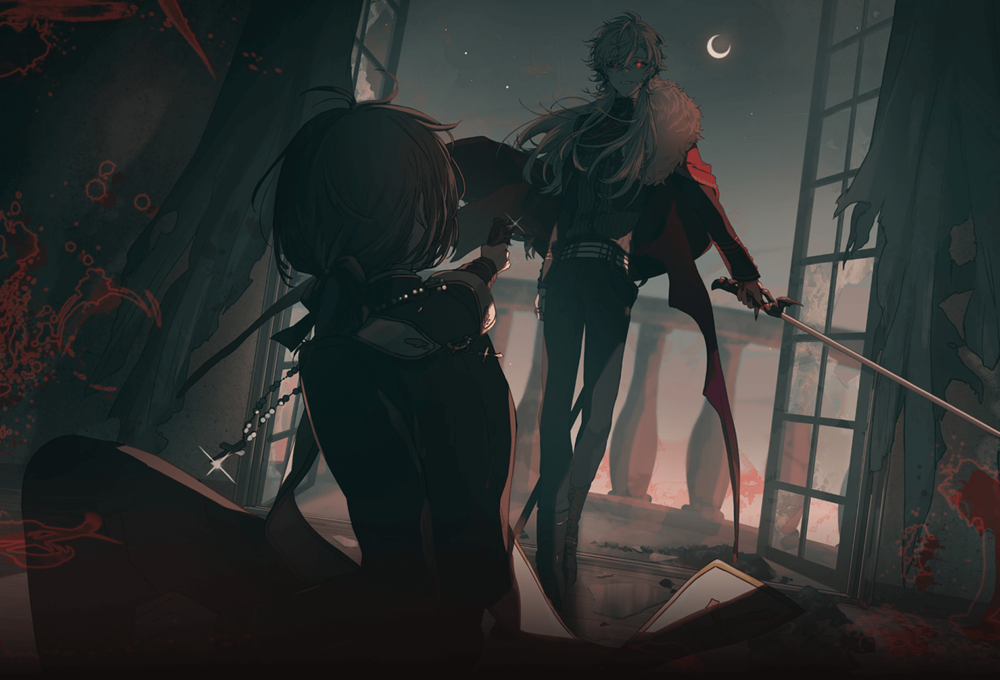
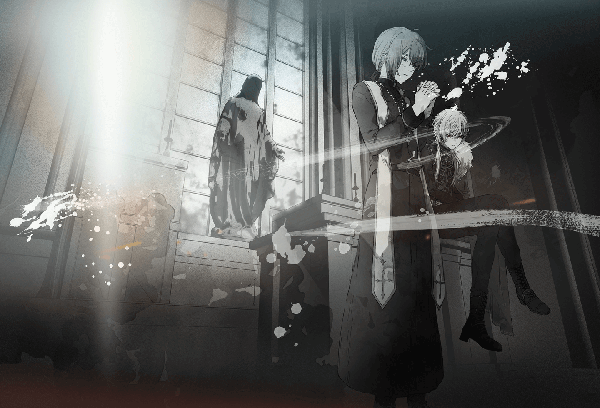
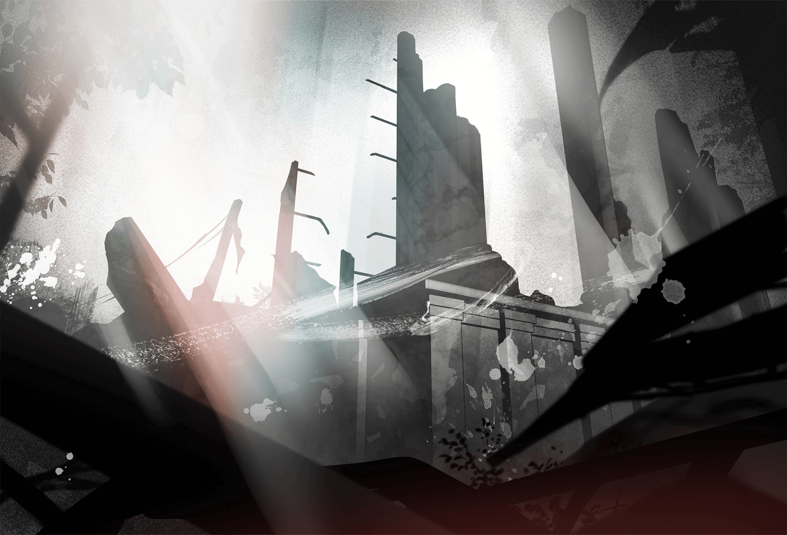
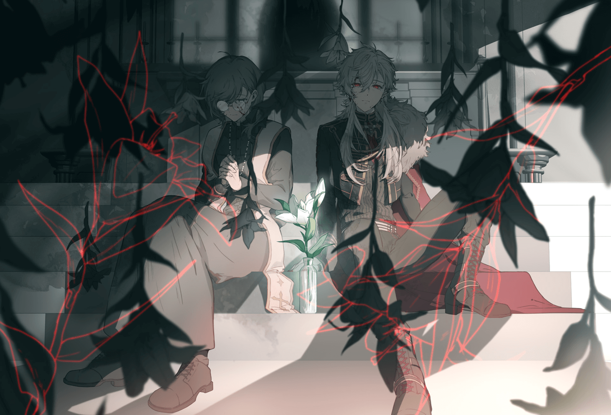

Introduction
- ChroNoiR, debuting on 17 July 2018, is a vtuber-duo unit come from Nijisaji that consists of Kanae and Kuzuha.ChroNoiR was foreshadowed as a unit even before Kuzuha's debut in NIJISANJI. They are the first NIJISANJI unit that has its own dedicated YouTube Channel.
- The unit's name was a fan suggestion among many, with the idea that both Kanae and Kuzuha like the color black, and from there, their name was made from the Japanese word "黒" (Kuro, Black) and the French word "Noir" (Black), making "KuroNoir" and later, "ChroNoiR". The name would also mean "黒黒" (Kuro Kuro, Black Black) in Japanese and it's initials would be "KK" for Kanae and Kuzuha's name.
- Hashtags: #くろのわ - general hashtag | #くろのあとりえ - fanart hashtag
- Emoji: 🖤
Story

- a Vampire on a mission and

- a human traveling with a black cat

- they spun a story of meeting and parting

- a story of encounter and parting